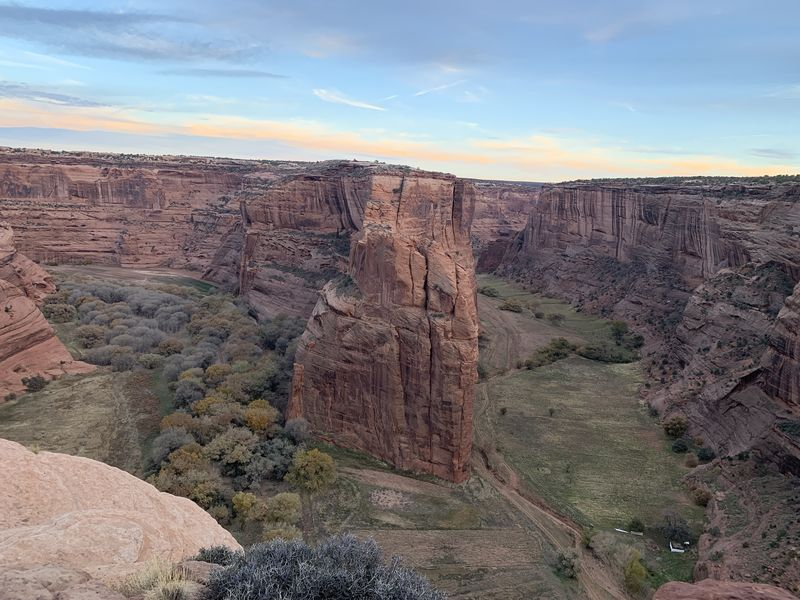
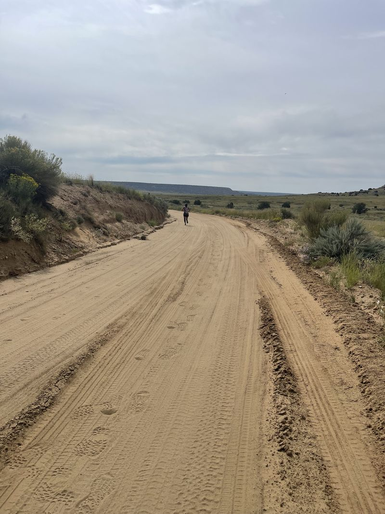
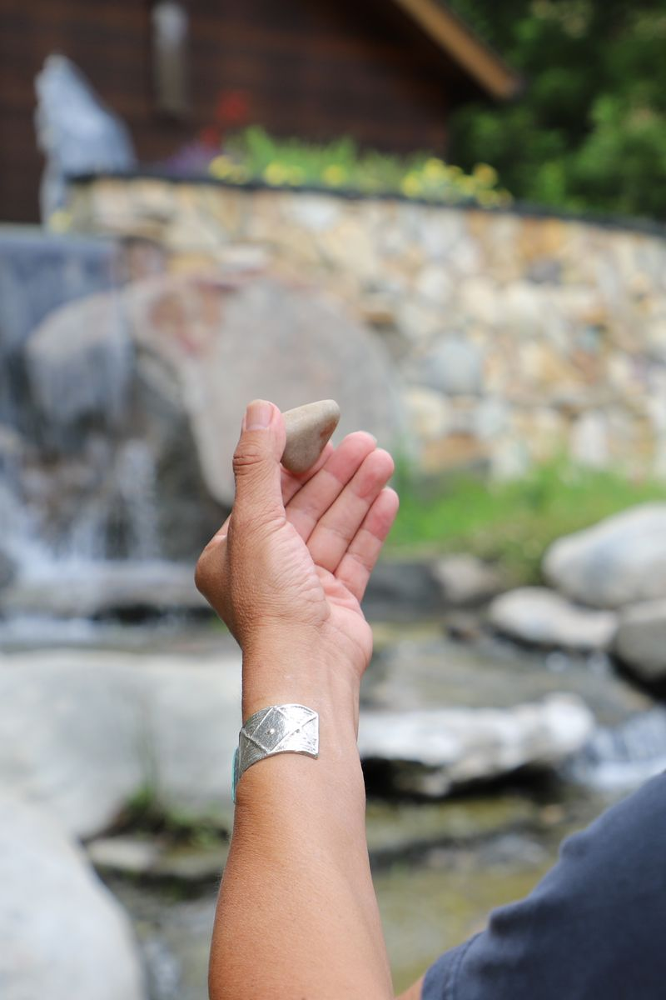

1
The Runner's Protocol
Step one: settle the carrier first.
Every tradition in this path did one thing first: "Regulate the operator before you read anything." This week you learn the most completely documented far messenger toolkit there is, the one that came down a named line into print: the record of hard things, the stone, the ankle, the horizon, and never looking back.
"I carry it, and it carries me."


